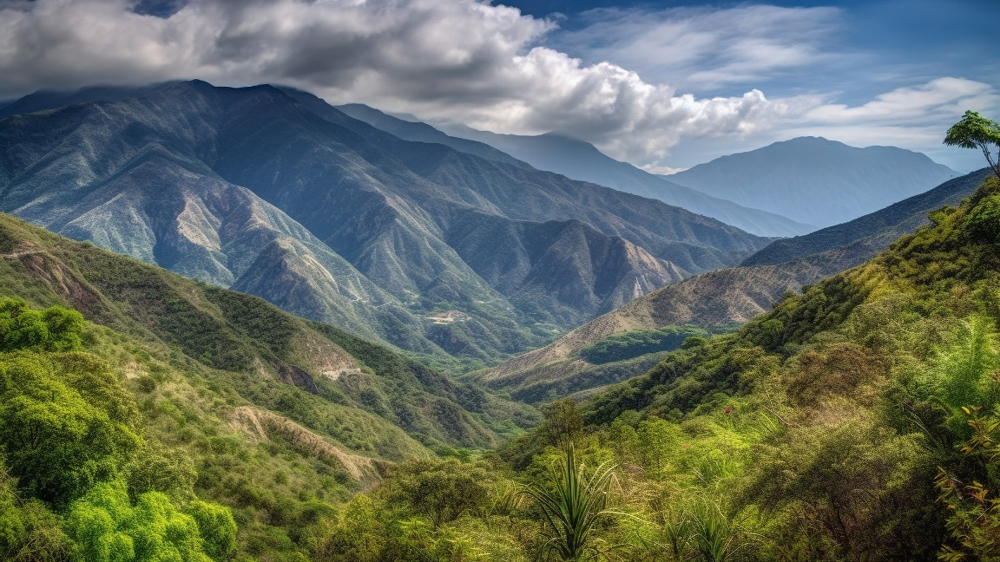

Araku is located in the Eastern Ghats about 114 kilometres (71 mi) from Visakhapatnam, close to the Odisha state border. The Anantagiri and Sunkarimetta Reserved Forest, which are part of Araku Valley, are rich in biodiversity and are mined for bauxite. Galikonda hill rising to a height of 5,000 feet (1,500 m) is amongst the highest peaks in Andhra Pradesh. The average rainfall is 1,700 millimetres (67 in), the bulk of which is received during June–October.The altitude is about 1300 m above the sea level. The valley spreads around 36 km Araku is connected through both rail and road to Visakhapatnam. Araku railway station is located on the Kothavalasa-Kirandul railway line of Visakhapatnam division of the East Coast Railway, on the Indian Railways network. RTC Buses to Visakhapatnam every half an hour.